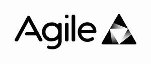

Trade Mark Journal No.2026/008 20 February 2026
UK00004304886 3 December 2025 (9,16,25,35,41,42)

- Class 9
- Computer software and downloadable programs; Downloadable software; Cloud-based software; Data analytics software; Artificial intelligence software; Data integration software; Software for managing, storing, analysing and processing data; Downloadable mobile applications; Downloadable electronic publications, reports, manuals and training materials relating to data analytics, information management and business intelligence; Software for automated Agile development and Agile-based information management methods for the organisation, processing and governance of business data; Downloadable templates, dashboards and digital toolkits for use in data analytics and Agile business methodologies.
- Class 16
- Paper and cardboard; Printed matter; Printed publications, brochures, reports and manuals relating to business data, analytics and information management; Training materials and instructional documents in printed form; Bookbinding material; Stationery and office requisites (except furniture); Adhesives for stationery or household use; Artists’ materials and paintbrushes; Branded paper and cardboard merchandise including notebooks, folders and writing pads; Promotional and marketing printed materials; Labels (not of textile); Packaging materials of paper or cardboard; Plastic packaging materials (not included in other classes).
- Class 25
- Clothing; Footwear; Headgear.
- Class 35
- Business management, business administration and consultancy services; Business consultancy; Business management consultancy; Advisory services relating to business data strategy, data governance, digital transformation and business process optimisation; Business project management services; Business information, research and data analysis services; statistical analysis and performance reporting; Compilation, processing, management and retrieval of business information and data; Maintenance and recording of business data for quality, ownership and lineage purposes; Preparation of business reports, audits and appraisals; Business advisory services relating to the use of data and analytics in business decision-making and cloud adoption; Consultancy and advisory services relating to artificial intelligence (AI), digital transformation and organisational data maturity; Business data analysis and strategic assessments of AI readiness, adoption and implementation; Preparation of business reports and recommendations relating to AI governance and optimisation; Consultancy and advisory services relating to data governance, regulatory compliance and ethical use of data and artificial intelligence; Business risk assessment and strategy development in the fields of data protection, privacy and digital transformation; Preparation of business reports and audits relating to organisational compliance and ethical data management practices; Marketing, promotional and advertising services; Publication and dissemination of promotional materials including via websites and online platforms.
- Class 41
- Education and training services; Training relating to data management, cloud technologies, artificial intelligence, analytics, data governance, digital transformation and information technology; Arranging and conducting workshops, courses and seminars in technology and data fields.
- Class 42
- Information technology consultancy; Consultancy in cloud computing; Consultancy relating to data systems, software design, digital transformation and agile development methodologies; Design, development, implementation and maintenance of computer software, platforms and applications; Design, development, deployment and hosting of analytical, data governance and information management applications; Software as a Service (SaaS) and Platform as a Service (PaaS) featuring software for data management, analytics, business intelligence and regulatory compliance; Design, development and implementation of artificial intelligence (AI) software, algorithms and machine learning systems; Technical consultancy on AI integration, testing and optimisation; Development of AI-based data analysis platforms and predictive analytics tools; Design of frameworks and methodologies for assessing organisational AI maturity and capability; Design, development and implementation of software and platforms for regulatory compliance, data governance and ethical AI management; Consultancy in data protection technology and privacy-by-design systems; Design and development of frameworks and digital tools for compliance auditing, risk assessment and ethical decision-making in data analytics and AI systems; Technical support and troubleshooting for computer software and cloud-based systems; Design, development, maintenance and hosting of websites and online platforms; Monitoring of computer systems for performance and reliability; Consultancy relating to cybersecurity and data protection; All of the aforesaid services not relating to military, defence, aerospace or security purposes.
Agile Solutions (GB) Ltd
Representative: Harper Macleod LLP